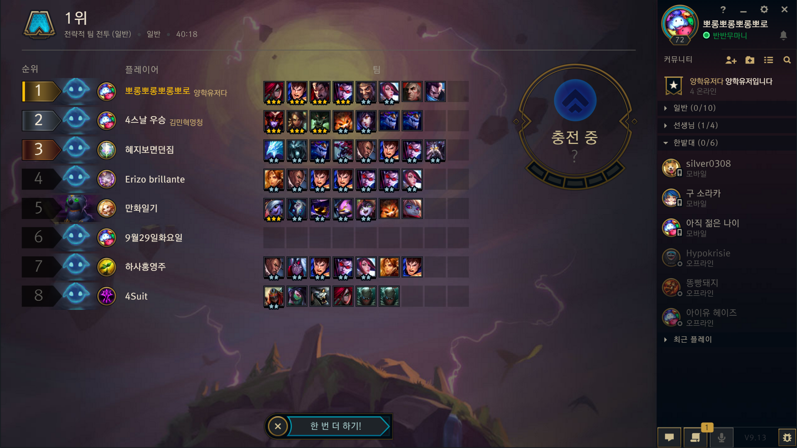
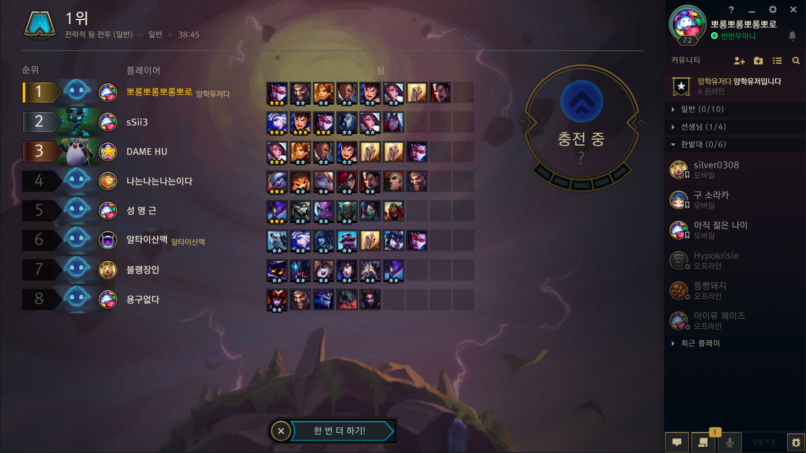
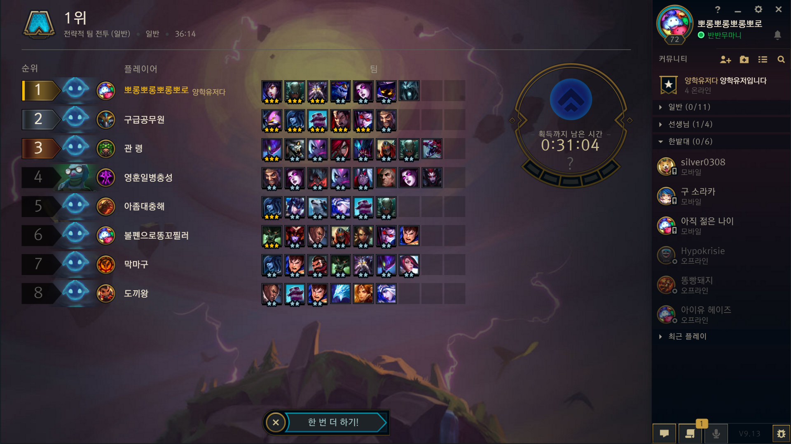

- 우승
- 순위권
- 통계
- 참고사이트
우승
- 제국 + 귀족 + 추방자 (첫 우승)
(4) 제국 - 모든 제국 유닛은 두 배의 피해를 입힘
(3) 귀족 - 무작위 아군 하나의 방어력 +100 및 공격시 35 체력 회복
(3) 검사 - 45% 확률로 추가 공격 1회
(2) 기사 - 기사는 20 피해량 방어
(1) 추방자 - 전투 시작시 추방자 주변에 아군이 없다면 최대 체력의 100%만큼 피해를 흡수하는 보호막을 획득합니다.

한줄평 : 첫 우승이였다 매우 꿀잼 제국 뽕에 취했다.
- 귀족 + 제국
(6) 귀족 - 모든 아군의 방어력 +100 및 공격시 35 체력 회복
(2) 제국 - 무작위 제국 유닛 하나는 두 배의 피해를 입힘
(2) 기사 - 기사는 20 피해량 방어

한줄평 : 제국 뽕에 취해 계속 제국하다 연패 중 얼떨결에 6귀족 완성 후 우승
- 제국 + 빙하 + 기사
(4) 제국 - 모든 제국 유닛은 두 배의 피해를 입힘
(2) 빙하 - 적을 기절시킬 확률 20%
(2) 기사 - 기사는 20 피해량 방어

한줄평 : 아직 제국 뽕에 취해있음 빙하에 재미들린듯 지금보니 좀 조합이 별로인데 어떻게 이겼냐..
- 마법사 + 파이크
(6) 마법사 - 아군의 스킬 피해량 100% 증가

한줄평 : 아니 ㅋㅋㅋ 어떻게 우승?ㅋㅋㅋ 파이크ㅈ망겜이던 시절 용은 잡기 힘들지만 마법사 진짜 세다.. 이때부터 마법사만 함